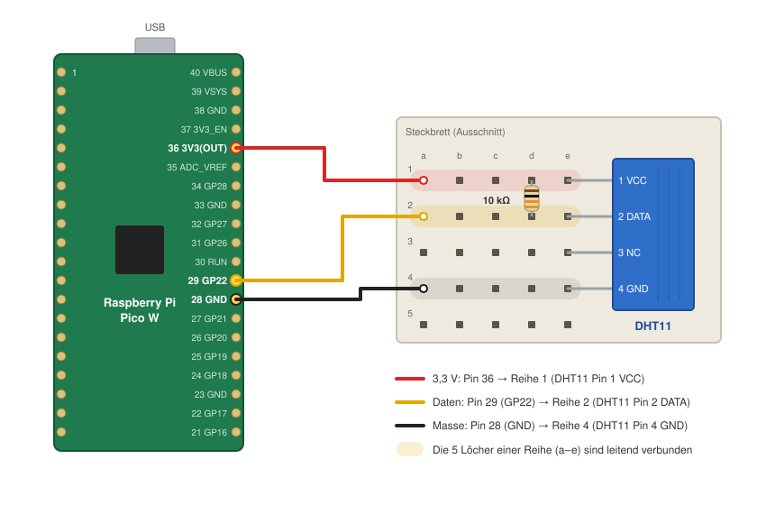

Materialien
Sie erhalten in der ersten Sitzung die folgenden Materialien ausgehändigt:
| Anzahl | Bauteil | Hinweis |
|---|---|---|
| 1 | Raspberry Pi Pico W (oder ESP32) | Mikrocontroller mit WLAN |
| 1 | Temperatursensor DHT11 | Temperatur und Luftfeuchtigkeit, 4 Pins |
| 1 | Widerstand 10 kΩ | Pull-up für die Datenleitung (Farbringe braun-schwarz-orange) |
| 1 | Steckbrett (Breadboard) | für den Aufbau ohne Löten |
| 3 | Steckkabel (Jumper Wires) | idealerweise rot, gelb/grün, schwarz |
| 1 | USB-Micro-B-Kabel (bei Bedarf) | Stromversorgung und Programmierung |
Bitte geben Sie diese nach Ende des Semesters unaufgefordert zurück, erst dann wird die Note freigegeben.
Der Einsatz anderer Hardware kann mit der Lehrveranstaltungsleitung abgesprochen werden.
Aufbau der Hardware
Der DHT11 wird mit drei Leitungen an den Pico W angeschlossen: Versorgungsspannung (3,3 V), Masse (GND) und eine Datenleitung. Der 10 kΩ-Widerstand verbindet die Datenleitung mit 3,3 V (Pull-up), damit die Leitung im Ruhezustand einen definierten Pegel hat.

| Pico W | DHT11 | Kabel | |
|---|---|---|---|
| Pin 36 – 3V3(OUT) | → | Pin 1 – VCC | rot |
| Pin 29 – GP22 | → | Pin 2 – DATA | gelb |
| – | Pin 3 – NC (nicht verbunden) | – | |
| Pin 28 – GND | → | Pin 4 – GND | schwarz |
Zusätzlich: 10 kΩ-Widerstand zwischen DHT11 Pin 1 (VCC) und Pin 2 (DATA).
Schritt für Schritt
- USB-Kabel abstecken. Verdrahten Sie immer im stromlosen Zustand.
- DHT11 einstecken. Stecken Sie den Sensor so in das Steckbrett, dass jeder der vier Pins in einer eigenen Reihe steckt. Pin 1 ist der linke Pin, wenn das Gitter zu Ihnen zeigt und die Pins nach unten zeigen.
- Widerstand einstecken. Verbinden Sie mit dem Widerstand die Reihe von Pin 1 (VCC) mit der Reihe von Pin 2 (DATA). Die Einbaurichtung ist beim Widerstand egal.
- Kabel stecken. Verbinden Sie die Pins des Pico W mit den Reihen des Sensors wie in der Tabelle angegeben. Die Pin-Nummern finden Sie im Pinout, Pin 1 ist neben dem USB-Anschluss markiert.
- Kontrolle. Prüfen Sie vor dem Einstecken des USB-Kabels, dass 3,3 V und GND nicht vertauscht sind. Ein falsch gepolter Sensor kann heiß werden und kaputtgehen.
- In der Konfiguration eintragen. Der Datenpin wird in der
settings.tomlalssensor_pin = 22angegeben.

TipHinweise
- Steckbrett: Die fünf Löcher einer Reihe (a–e) sind im Inneren leitend verbunden. Was in derselben Reihe steckt, ist also miteinander verbunden.
- DHT11 als Modul: Manche DHT11 sind auf einer kleinen Platine mit nur drei Pins verbaut. Dort ist der Pull-up-Widerstand bereits eingebaut und die Pin-Reihenfolge ist aufgedruckt (z.B.
+,out,-). Der zusätzliche Widerstand entfällt dann. - ESP32: Der Aufbau ist identisch (3V3, GND, Datenpin). Die ESP32-Vorlage nutzt GPIO 4 als Datenpin (
DHT_SENSOR_PINinsrc/esp32_firmware/src/sensors/my_sensor.h). - Keine Messwerte? Der DHT11 liefert höchstens alle 1–2 Sekunden einen neuen Wert. Häufiges Auslesen führt zu Fehlern.